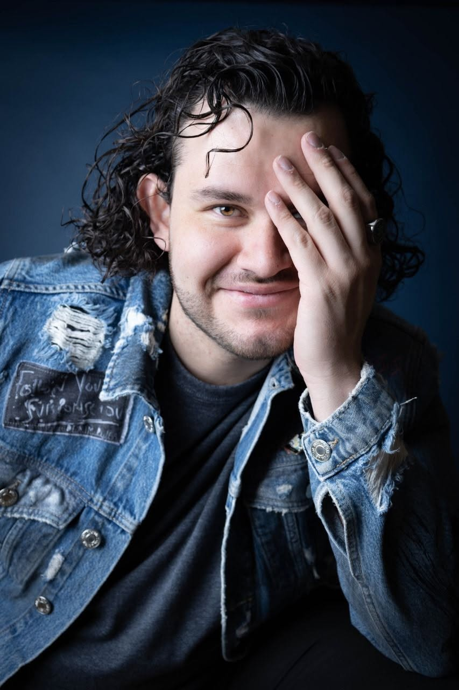

Amor, Pareja y Vínculos
Relaciones y armoníaPara sanar distanciamientos, resolver crisis sentimentales, endulzar la relación o recuperar la comunicación y el entendimiento mutuo con esa persona especial.
Especialistas en amor, limpiezas y alta magia
Soluciones espirituales personalizadas para resolver bloqueos sentimentales, purificar tu energía o abrir caminos de prosperidad. Atención directa, ética y confidencial por Carmen y Styxe.
Atención personalizada · Seguimiento incluido · Desde $400 MXN
Cada caso es único y se diseña a medida. Estas son las tres grandes líneas en las que centramos nuestra labor:
Para sanar distanciamientos, resolver crisis sentimentales, endulzar la relación o recuperar la comunicación y el entendimiento mutuo con esa persona especial.
Neutralizamos la pesadez, cortamos trabajos oscuros, limpiamos bloqueos de mala suerte y establecemos un escudo protector firme sobre ti, tu hogar o tu negocio.
Para destrabar situaciones laborales estancadas, atraer nuevas oportunidades profesionales, abrir los caminos de la abundancia y propiciar la buena suerte.
Junto a Carmen, encabezamos Soteira & Sons bajo una premisa firme: descartar los gabinetes masivos para ofrecer un acompañamiento artesanal, riguroso y transparente desde el primer mensaje, abierto a cualquier tipo de solicitud y necesidad ritual.

Especializado en el estudio y la práctica de la alta magia y el trabajo con muertos, con foco principal en despojos energéticos y magia defensiva, manteniendo abiertas las puertas a todo tipo de servicios y encargos personalizados.
Garantizamos una atención ética, artesanal y enfocada exclusivamente en resultados sólidos.
Atención directa, cercana y estrictamente personal por Carmen y Styxe, cuidando cada detalle de forma artesanal.
Discreción total en cada proceso y un seguimiento riguroso y personalizado durante los días que dure el trabajo.
Priorizamos el equilibrio y la evolución real, adaptando siempre los medios y los materiales a la ética de la alta magia.
"La magia es el arte de alinear la voluntad con los hilos invisibles de la realidad."
Experiencias reales de personas que transformaron su situación a través de nuestros trabajos espirituales.
Las vías están abiertas. Escríbenos por WhatsApp de forma confidencial para definir juntos qué opción se adapta mejor a tu caso y te guiamos en el proceso sin compromiso (incluyendo trabajos personalizados o específicos por encargo).